Destiny & Arcana¶
Glimmers of true power flicker beyond mortal sight, revealing a grand tapestry of fate. Your Destiny Score is both compass and conduit. Every hero begins with a Major Arcana—an echo of cosmic authority. Wield these gifts wisely: the greater your strength grows, the more the universe may demand in return.
"There are more worlds than you know. Tread carefully, lest you rouse the powers that shape them."
1. The Major Arcana¶
Twenty-two cards, and each one is a person your fate could turn out to be. A card is never just a bonus: it carries a meaning, it moves your Destiny Score, it grants a power you may use, and it can sing vibrations into your soul — six ways the world answers you.
At character creation, draw your card among the 22 Major Arcana (Random Tarot Card Generator) — or take one of the three starter cards the builder sets out for a first character (The Fool, The Chariot, The Sun). Only one Major Arcana is ever active — powers never stack. New cards come later, drawn on an Arcane Awakening (§7).
Each card's page gives:
- Meaning — a symbolic summary.
- Signature Ability — the card's ability score, read on your sheet: the spellcasting ability of its Vibrations, and the Chaos table any Vibration drags you onto.
- Destiny Impact — a modifier to the initial Destiny score.
- Power — a regularly usable ability (like a racial trait).
- Vibrations — six stored one-shot effects, rank 1 to 6 (the rules: §8).
2. The Deck¶
The full deck, card by card — meaning, signature ability, impact, power, and the six Vibrations of each.
0. The Fool¶
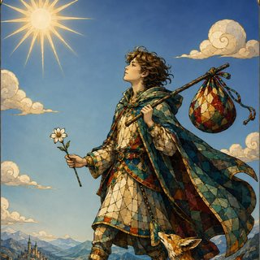
innocence, beginnings, carefreeness, freedom. Unlimited potential, stepping into the unknown without fear. Exploration without attachments, trust in chance.
I. The Magician¶
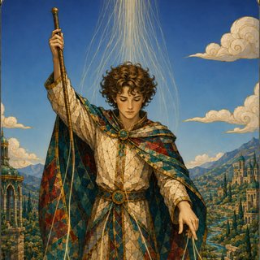
ingenuity, creativity, mastery of tools. The intellect shapes reality. The initiator of change through willpower.
II. The High Priestess¶
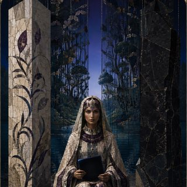
hidden knowledge, intuition, mystery. Inner wisdom, revelation through patient study. Silence and secrets of the soul.
III. The Empress¶
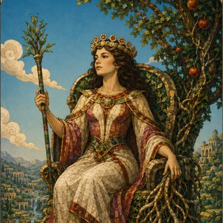
fertility, abundance, growth, prosperity. Support, harmony, generosity.
IV. The Emperor¶
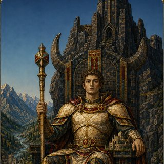
authority, order, stable power. Construction, organization, protection.
V. The Hierophant¶
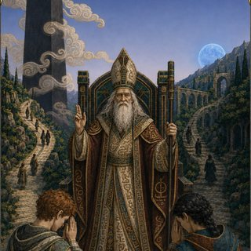
tradition, teaching, spiritual guidance. Faith, rituals, sacred order.
VI. The Lovers¶
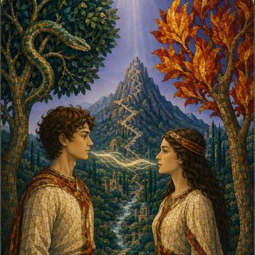
choice, harmony, relationships, moral dilemmas. Union, sacrifice, cooperation.
VII. The Chariot¶
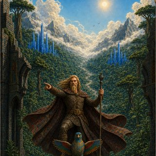
victory, determination, triumph. Active control, moving toward success.
VIII. Strength¶
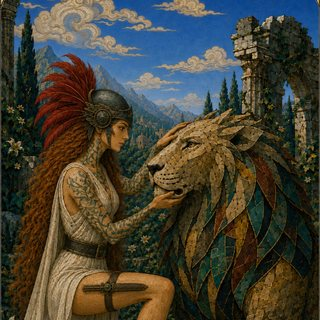
courage, mastery of instincts, perseverance, moral and physical endurance.
IX. The Hermit¶
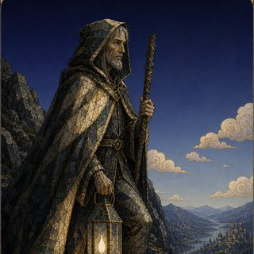
introspection, solitude, search for truth. Knowledge found in inner calm.
X. Wheel of Fortune¶
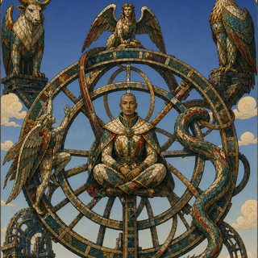
change, unstable destiny, opportunity, unpredictability. Embracing the cycle of ups and downs.
XI. Justice¶
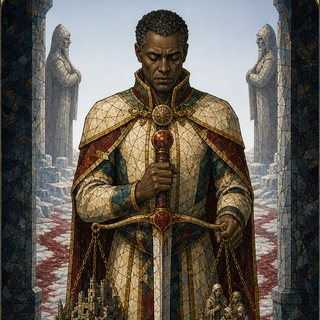
fairness, responsibility, moral order. Evaluating, assuming responsibility, restoring balance.
XII. The Hanged Man¶
sacrifice, letting go, new perspective. Renouncing to gain understanding.
XIII. Death¶
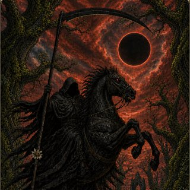
transformation, end of a cycle, rebirth. Radical change, not absolute finality.
XIV. Temperance¶
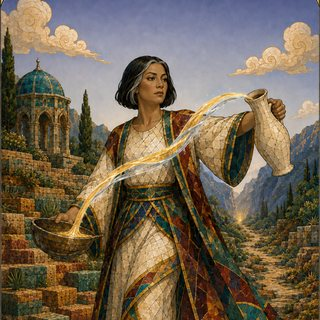
moderation, harmony, compromise. Finding balance and the right measure.
XV. The Devil¶
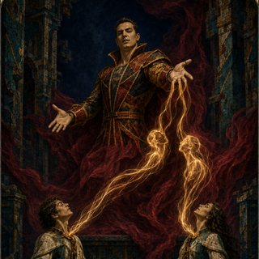
temptation, illusions, voluntary servitude. Power at the cost of freedom.
XVI. The Tower¶
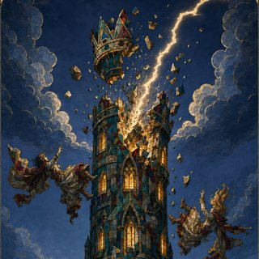
shock, collapse, brutal revelation. Destruction to rebuild on truth.
XVII. The Star¶
hope, inspiration, celestial guidance. A beacon in the night, trust in the future.
XVIII. The Moon¶
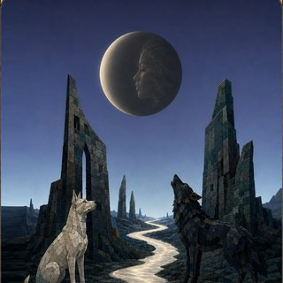
illusions, dreams, nocturnal mysteries. The unconscious mind, distorted perception.
XIX. The Sun¶
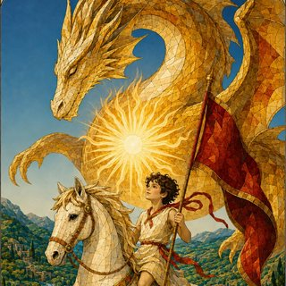
success, vitality, clarity, joy. Dispels shadows, brings optimism and truth.
XX. Judgement¶
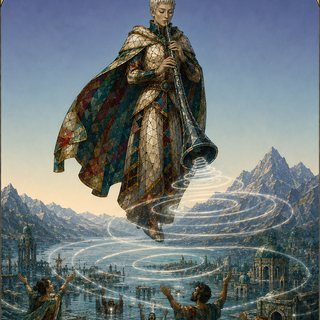
rebirth, higher calling, final reckoning. Weighing the past, offering redemption or judgment.
XXI. The World¶
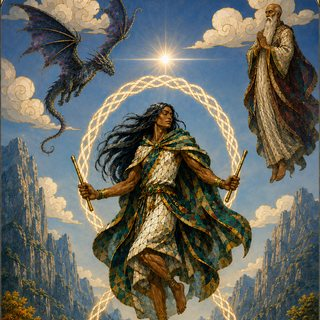
accomplishment, wholeness, unity. The end of one cycle, opening to a new beginning.
3. Destiny Score, Points & Dice¶
- Destiny Score — your ceiling (maximum). A measure of your cosmic significance.
- Destiny Points — your current value. Spent to fuel Destiny Dice; replenished on rest.
- Destiny Dice — d4 / d6 / d8 / d10 / d12, used to bend a roll (see §5).
Calculating your Destiny Score¶
- Proficiency — add your proficiency bonus.
- Innate — species base (table below), your Inheritance, feats (e.g. Auspicious), and your Major Arcana.
- Glory / Damnation — deeds that shift your standing among hidden powers (honor raises it, villainy taints it).
- Other — a magic item, a boon, or some subclasses may also influence the score.
Example — Sir Gawain (5th-level Human Knight): proficiency +3, Human birthright +3, Auspicious +2, Arcana boon +1, chivalric deed +1 → Destiny Score 10.
Destiny Dice — slots & stacking¶
Each time your Destiny Points reach an even total, you gain a Destiny Die in the lowest slot available — d4 first, then d6, d8, d10, d12. Only once all slots up to d12 are full does the next even total start a second round: a 2nd d4, then a 2nd d6, and so on — so you can hold several dice of the same size.
Your Points go up and down in play, so there is no fixed link between a Points total and a die size — only the lowest empty slot matters. You may wake up at 8 Points one morning and the first open slot is a d6.
Arcane Critical¶
A max roll on a Destiny Die (e.g. a 12 on a d12) is an automatic Natural 20, at a cost of only −1 Destiny Point — no Arcane Awakening.
Species — Base Destiny¶
Base Destiny is 2 for every species. A handful get a dedicated Destiny-chosen power on top of that flat 2 — currently Elf (+2 to the Destiny pool), Human (+1 Destiny Point/day) and Halfling (advantage on Chaos rolls). No other species has one yet.
Full traits for each species: see Species. The Eluzi (an ascended state, not a starting species) keep the Base Destiny of what they were. Older species (Aasimar, Half-Elf, Half-Orc, Eladrin, Firbolg): see the archive.
4. Recovery & Erosion¶
- Long rest: regain +1 Destiny Point — capped at your Destiny Score.
- Even total → die back: each time your Points reach an even number, regain the lowest missing die.
- Cap & overflow: long rest and most recovery cannot exceed your Score. The exceptions — Arcana cards and Natural 1s — grant temporary points that may push you above your Score.
- Natural 20 (on a d20): −1 Destiny Point. If this brings you to 0, trigger an Arcane Awakening (§7).
- Natural 1 (on a d20): either Accept (fail, +1 temporary point) or Invoke Chaos (Points → 0, the failure becomes a critical success, then roll 2d6 on the Chaos Table).
- Other sources of temporary points: the Ceremony spell (once per long rest; better with a richer sacrifice), and Minor Arcana drawn on an Awakening.
"When fortune smiles, it always demands a price. When it frowns, you must risk even more to survive."
5. Using Destiny Dice¶
- Spend a die — roll it; subtract the result from your Destiny Points and add it to a d20 check (attack, skill, or save).
- Breach 0 — if your Points reach 0 or below, provoke Chaos (§6).
- Max roll = Critical Success — counts as a Natural 20; you lose only −1 Point (not the full roll) and the die is spent until recovered.
- Roll of 1 = Arcane Critical Failure — or a refusal. A 1 on a Destiny Die is an offer, exactly as a Natural 1 on a d20 is (§4). Choose:
- Accept — the check fails critically; you gain +1 Destiny Point but lose that die. (That +1 often lands you on an even total, which immediately regains the lowest missing die — so roughly one time in two you get a die straight back.)
- Refuse — the 1 reads instead as the die's highest face: an Arcane Critical Success (§3), counting as a Natural 20. The price is exactly what defying a Natural 1 costs — your Points drop to 0 and you roll 2d6 on the Chaos Table for the ability you were using. The die is spent either way, and refusing forfeits the +1 point along with any die it would have brought back.
Refusing is the mirror of §4's Natural 1: the same gesture, made from the other side. Fate offered you a way out of the failure it was about to hand you; taking it back costs everything you were holding.
Example — Lirien (Points 6) attempts a wild acrobatic feat with a d6. She rolls 5: +5 to her check, dropping her to 1. She avoids Chaos (5 < 6), but one more push risks calamity.
6. The Chaos Effect¶
Chaos occurs when spending a die brings your Destiny Points to 0 or below.
- Overreach — how far below 0 you land (Points 6, roll 8 → Overreach 2).
- Overreach Save — save with the same ability vs DC = 10 + Overreach.
- Success — suffer 1 level of Exhaustion.
- Failure — roll 1d6 + Overreach on the Chaos Table for that ability. The higher the result, the worse (injuries, lasting handicaps, madness tied to the ability used).
A Natural 1 on a d20 may instead force destiny — turning the failure into a critical success (Natural 20) at the cost of a 2d6 Chaos roll. Refusing an Arcane Critical Failure (§5.4) costs the same 2d6, and likewise skips the Overreach save entirely: the two refusals go straight to the table.
Exhaustion — house scale¶
The 5e ladder is not used here. Chaos hands out levels often enough that the official scale would end a character rather than mark one: by two levels you are already unplayable. Fate's Hand keeps the six levels and flattens what each one costs.
- Six levels. Each level is a flat −1 to every d20 test — ability checks, attacks and saving throws alike. They stack, so level 3 is −3. Level 6 is still death.
- No other penalty. No halved speed, no halved hit point maximum, no disadvantage — the −1 is the whole of it.
- Recovery. A long rest always removes 1 level of Exhaustion. A short rest may remove 1 additional level, but only once per day — once between two long rests. The long rest is what makes a short rest able to heal again.
Example — Karnos ends a bad night at Exhaustion 3, taking −3 on everything. His long rest brings him to 2. Later that same day, a short rest after a hard fight brings him to 1 — his one short-rest recovery for the day. A second short rest does nothing until his next long rest resets it; his next long rest, whenever it comes, removes another level regardless.
Example — Karnos (Points 4) hurls a d10 at a foe, rolling 9 → Overreach 5. He fails his Strength save (DC 15) and consults the Chaos Table: a fractured arm robs half his strength, but his blow lands with earth-shattering force.
7. Arcane Awakening¶
When your Destiny Points reach 0 after a Natural 20, draw a card from the tarot deck:
- Minor Arcana — gain temporary Destiny Points equal to the card's value, and a single Brick (§7.1). Numbered cards give their number (Ace = 1); heads — Page, Knight, Queen, King — give 10.
- Major Arcana — you gain +1 to your maximum Destiny Score and 10 temporary Destiny Points either way, then choose to switch to the new card (losing your old Arcana's powers for the new one's) or keep your current one. Only one Major Arcana is ever active — powers never stack.
Example — Alysandra (Points 1) lands a final strike with a Nat 20, draining her to 0 and sparking an Awakening. She draws The Emperor: her Score climbs and she gains command over lesser minds.
7.1 The Brick — dreaming something into being¶
A Brick is not a power. It is a roleplay opportunity: the chance to dream something into reality. It has no objective, no statistics and no cost — and the table should not go looking for any.
How it is given. When you draw a Minor Arcana, the GM hands you a Brick with these words, and no others:
Dream something. Tie it to your character's background and their aspirations. You will incept it — but you will not control it.
What you owe. A written story, composed by the player, on the theme of the Minor Arcana you drew. Its suit and its number colour the dream; they do not constrain it. There is no length requirement and no deadline — only that it be written, and be yours.
What it costs you. Nothing in points. But the dream marks you: it surfaces as tattoos across your body, in the imagery of the story you told. You did not choose them and you cannot remove them.
What it does to you. You feel the urge to tell the story — because the dream is so real. Not a compulsion the GM enforces with a save; a pull the player is invited to play. Over time this becomes the call of the White Void, and it grows stronger and stronger as time passes. A Brick is the beginning of something, not the end of it.
What you do not get. You do not choose when the dream takes hold, where it lands, or what it becomes when it does. ÂNON's only power is the intuition that chooses who dreams — never the when, never the what. Shaping the Brick seeds a pocket of White Void; what that pocket does afterwards is the world's business, not the dreamer's. (Full cycle — barrier, displacement, recomposition, fusion — in Les Forces Primordiales de Nymedes.)
For the GM
Do not ask what the Brick does. Ask what the player dreamed, and then let the world answer in its own time. A Brick that is never mechanically resolved has still done its whole job the moment the tattoos appear and the player starts wanting to tell you about them.
8. Arcane Vibrations¶
When fate sings through your card, a fragment of its theme stays with you. Each Major Arcana has six Vibrations — one per rank, listed under each card in the Deck (§2).
Storing a Vibration¶
When you roll an Arcane Critical Success on a Destiny Die (§5) while you have at least 1 Destiny Point, your Arcana vibrates: store one Vibration of your choice among those you have access to.
- Your Destiny Score (fixed) sets the highest rank you can reach:
| Destiny Score | 1–3 | 4–6 | 7–10 | 11–15 | 16–20 | 21+ |
|---|---|---|---|---|---|---|
| Max rank (1 rank = 1 vp) | 1 | 2 | 3 | 4 | 5 | 6 |
- You choose freely among every rank you have access to, and you may store the same Vibration more than once.
- Storage cap — your current Destiny Points: you cannot store a Vibration if the total vp of your stored Vibrations would exceed your current Points. Points lost later do not erase what is stored — but nothing new fits past the cap.
Casting a Vibration¶
A stored Vibration is a scroll written into your soul: casting it consumes it, and costs 1 Destiny Point. No components. It uses your action unless the mirrored effect says otherwise, with your card's Signature Ability as spellcasting ability (save DC = 8 + proficiency bonus + your modifier). Vibrations only come back by storing new ones — no recovery on a rest.
Casting through Chaos. You may cast without paying the point by invoking Chaos — the exact gesture of refusing a Natural 1 (§2): your Points drop to 0 and you roll 2d6 straight on your card's Signature-Ability Chaos table, no saving throw, skipping the Overreach save entirely. At 0 Points, this is the only way left to release a Vibration.
Losing a Vibration¶
Whenever you refuse a Natural 1 or an Arcane Critical Failure (§2, §5.4), on top of the usual price you must give up one stored Vibration of your choice, if you have any.
Example — Caracole (Destiny Score 11 → rank 4 access). With enough Points at hand, he stores a 2-vp Vibration, then a 3-vp one. Leaping a chasm, he rolls a Natural 1 — certain death. He refuses fate: the 1 becomes a 20, his Points drop to 0, Chaos rolls — and he lets go of one of his two Vibrations. The other stays stored; until his Points recover he can neither store more nor cast it, except through Chaos.
Vibrations and aberrants
The 132 Vibration powers are also the prize pool of aberrant kills: a slain aberrant yields a catalyst whose power is drawn from the Vibration tables — the arcana matching the aberrant's nature, rank capped by its CR tier.
Final Notes¶
Your Destiny Score and the Arcana are the wellspring of power in a world where heroic inspiration wanes. Draw carefully on your dice, lest you tumble into Chaos. A Major Arcana may raise you among the lords of reality — but tread softly.
"Gaze upon the shifting reflections. Each choice, each destiny, can ripple across a thousand worlds — if you dare."